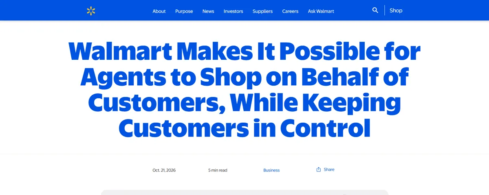

On October 21, Walmart launched an official way for AI agents to search and buy at Walmart and Sam's Club. Six days later, Apple said outside AI agents will be able to read and edit files in Keynote, Pages, and Numbers.
- Apple
- GitHub
- MCP
 ChatGPT
ChatGPT
Add GitHub's news from October 28 and a pattern shows up. Big apps are building proper doors for agents, with permissions and limits attached.
The old way: agents clicking like humans
Until now, most agents that "used" an app did it the hard way. They opened a browser, read the page, and clicked buttons designed for human eyes. It breaks when a button moves, it is slow, and the app owner has no say in what the agent does.
Some companies pushed back on that. Shortly before Walmart's announcement, Amazon began blocking AI agents from buying for shoppers. Walmart went the other way and built a front door instead.
MCP is becoming the standard door
Most of these doors use the Model Context Protocol, or MCP. Anthropic created it as a common way for AI models to connect to tools and data. An app that supports MCP lists the actions an agent is allowed to take, and any agent that speaks MCP can use them.
I think of it like a USB port for AI: one shape, and many different devices can plug in. My post on what AI agents are covers the basics.
Walmart: shopping with a spending limit
Walmart Agent Gateway is an MCP server that lets approved AI agents search and buy at Walmart and Sam's Club. It starts as a beta for companies and developers.

The part I like most is Agent Profiles, rolling out within a month. Each agent gets its own profile inside the customer's account, and its purchases show up separately. You choose whether it needs your approval for every purchase or can spend up to a limit, with examples like $50, $100, or $200.
Walmart's terms for agents are sensible. Customers approve purchases by default. Agents never get card details and cannot change payment methods. They only access the information they need. Walmart's returns still apply if an agent misbehaves, and agents that break the rules get blocked.
Apple: Keynote, Pages, and Numbers open up
On October 27, Apple announced a beta AI assistant inside Keynote, Pages, and Numbers, built on Apple models and OpenAI. It arrives in a November update for Apple Creator Studio subscribers ($12.99 a month or $129 a year in the US). It is US English only and needs an Apple Intelligence device running iOS 27, iPadOS 27, or macOS 27.
The bigger news for me is the second part. On macOS 27 or later, the three apps also get MCP support, so outside AI agents can read content, make edits, and run automated actions in them. Your own agent could update a Numbers sheet without you opening the app.
GitHub: the agent picks the model
GitHub took a different angle at its Universe conference on October 28. Copilot Fusion is now generally available on all Copilot plans. You pick Fusion and an effort level, and it chooses and combines models from Anthropic and OpenAI for each task.
GitHub says it costs up to 77% less and runs up to 40% faster. In the Artificial Analysis Coding Agent Index, Copilot Fusion Max scored within two points of Claude Code with Opus 5.5 at about half the cost per task. I want to test it on my own projects before I trust those numbers. Still, the direction makes sense: fewer people will pick models by hand.
Chat is becoming the screen
OpenAI is pushing from the other side. Since October 7, GPT-6 in ChatGPT can answer with "Intelligent UI", which means interactive elements like comparisons, diagrams, calculators, bill splitters, and games inside the chat.
Next to MCP, the picture gets clearer: the chat window shows you the interface, and the app does the work behind it through an official connection.
What this means for you
Official connections are safer than an agent clicking around a website, but only when the controls are good. As a user, watch these:
- What the permission prompt asks for, and whether you can say no to parts of it.
- Spending limits and approvals for anything that costs money.
- What data the agent can see beyond the task.
- Whether the app shows the agent's actions separately from yours.
- How quickly you can revoke access.
The habits from my post on AI agent security in October 2026 apply here too.
If you build apps, treat agents as a second kind of user. Expose your core actions through an MCP server, give each agent its own permissions, add approvals for anything that costs money, and log what agents do. Walmart's terms are a good template to copy. For students in Nepal, adding an MCP server to a project you already built is a practical way to learn this.
FAQ
What is MCP in simple words?
It is a standard way for AI agents to connect to apps and tools. The app says which actions are allowed, and any compatible agent can use them through one common format.
Is it safe to let an agent buy things for me?
Start with approval for every purchase. Move to a small spending limit only after you have watched how the agent behaves for a while.
About the author. Diwakar Ray Yadav writes about AI tools, prompt engineering, and automation from hands-on experiments in Kathmandu. Read more about Diwakar.